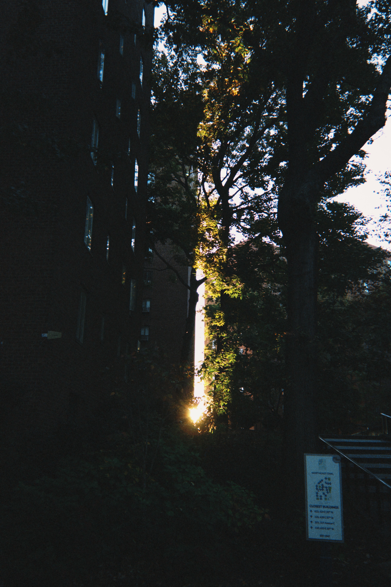
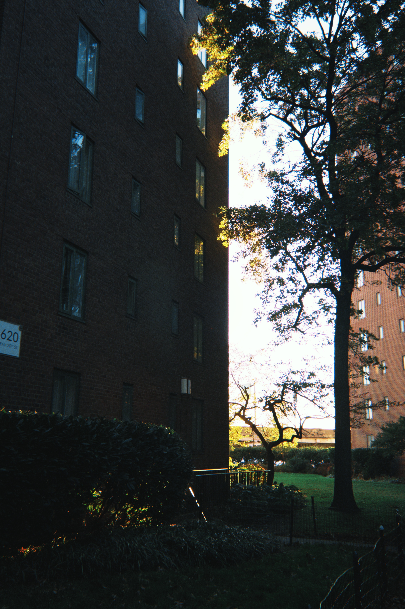
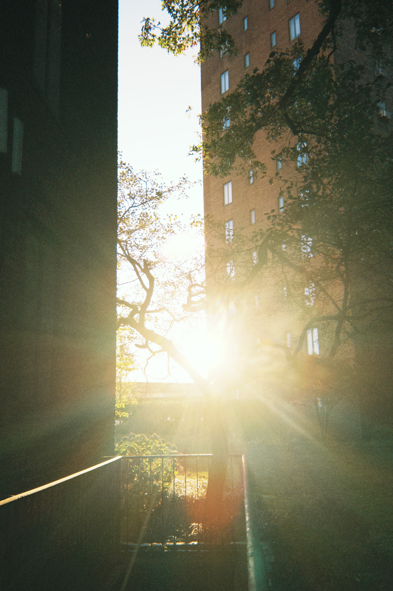
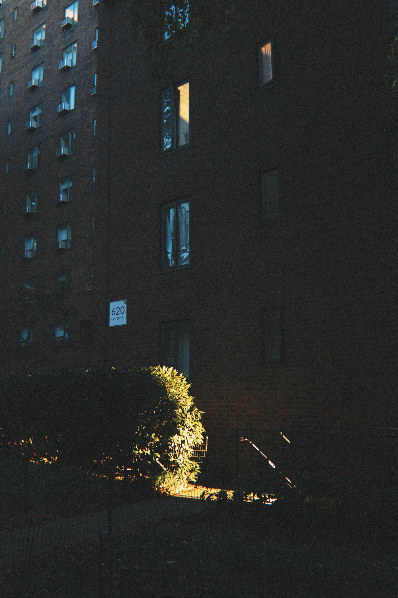
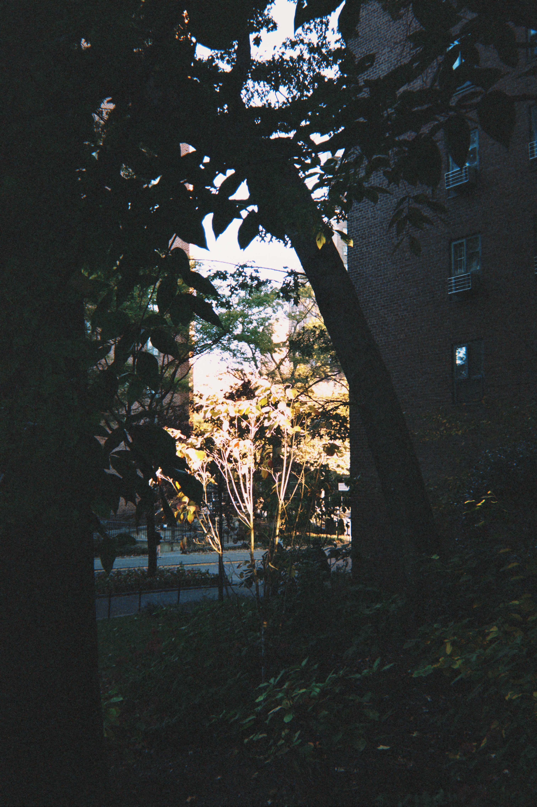

DIFFICULTY
⭐️⭐️
Morning
Walk
So, What exactly this is?
In this entry, I challenged myself to wake up at 6 a.m. and go for a walk (On a Sunday I might add)! It might not sound so challenging for some of you but I am a night owl who rarely sleep before 1 a.m., so this was something I felt proud of accomplishing, especially that it had been on my to-do list for the longest time.
For the review, it was one of the greatest and relaxing moments ever! The Sun was slowly rising and the sunlight was hitting on the flowing tree. Not to mention the brightest smiles from people who also came for a morning walk too. Despite the fact that I felt pretty sleepy, I would definitely do this more often!
(Feel free to play with my Morning Walk pictures :3)






